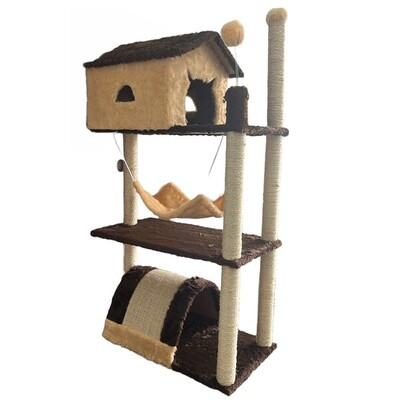
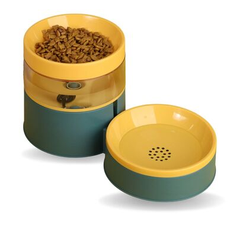
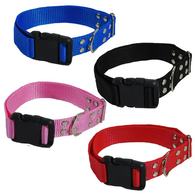
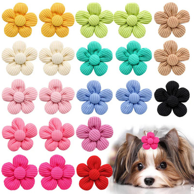

Nossos Produtos
Lista de Produtos em Destaque
Ração Premium Sabor Carne para Cães Filhotes

Brinquedo Mordedor em Silicone Resistente para Cães

Arranhador Vertical com Base de Sisal para Gatos

Pote para Ração Antiderrapante

Coleira Ajustável para Cães

Cama Acolchoada com Forro Removível para Gatos

Roupinha Confortável para Cães

Lacinho Decorativo com Elástico para Pets

Coleira Antiparasitária com Proteção de Longa Duração

Perfume Suave para Cães

Sachê Sabor Carne ao Molho para Cães Adultos

Bebedouro Elétrico Automático com Filtro de Água